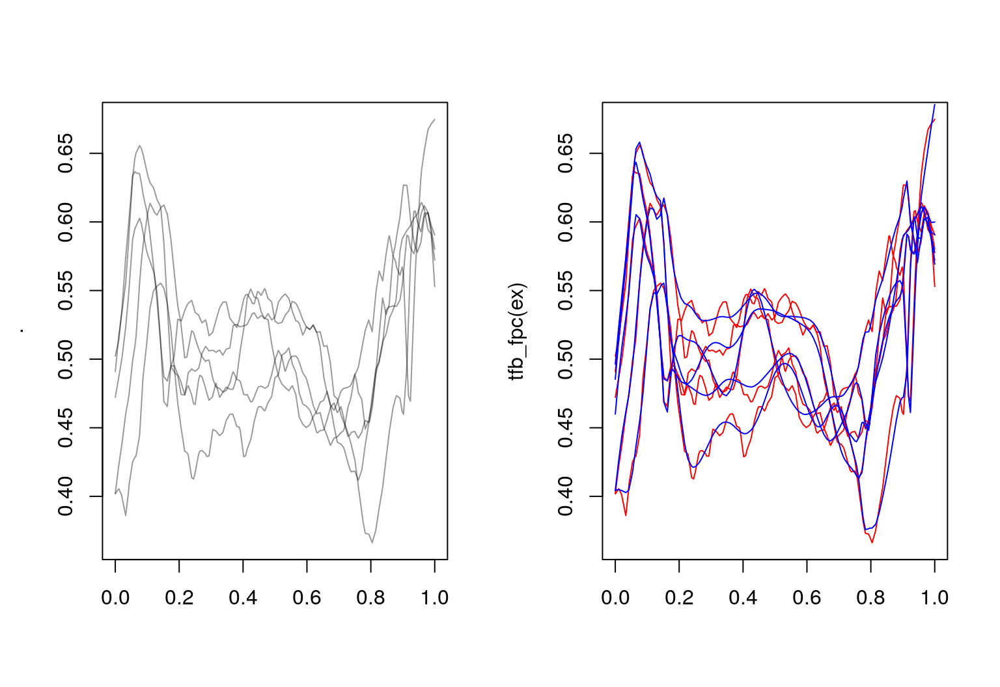
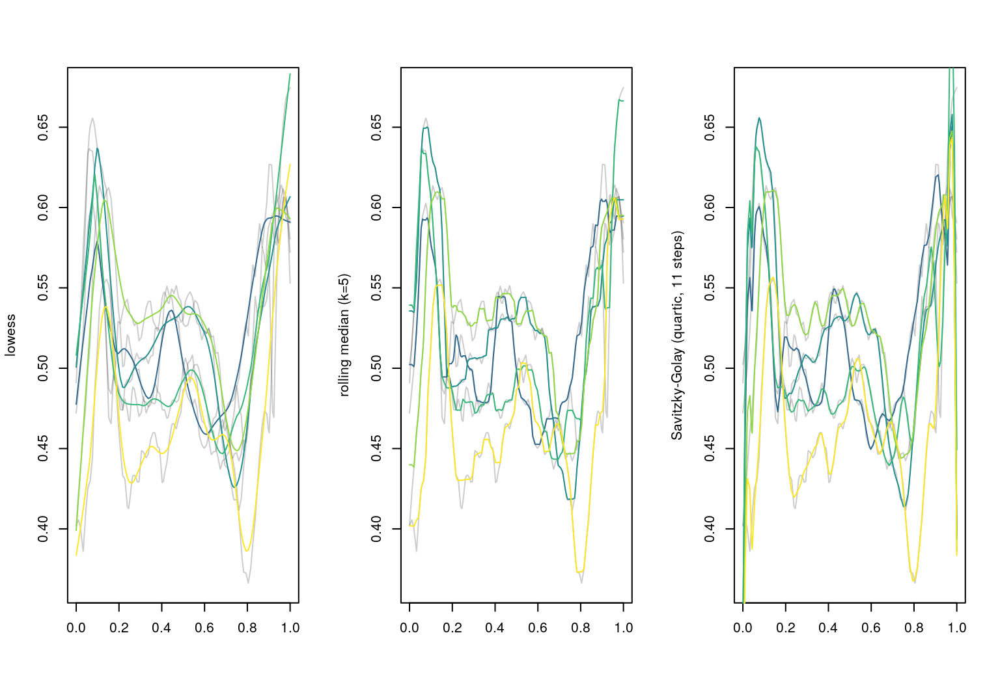
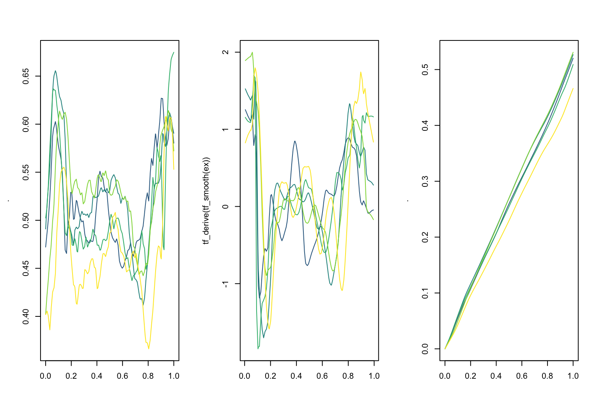

tidyfun
The goal of tidyfun is to provide accessible and well-documented software that makes functional data analysis in R easy, specifically:
data wrangling and exploratory analysis.
tidyfun provides:
new data types for representing functional data:
tfd&tfbarithmetic operators, descriptive statistics and graphics functions for such data
tidyverse-verbs for handling functional data inside data frames.
tf-Class: Definition
tf-class
tf is a new data type for (vectors of) functional data:
- an abstract superclass for functional data in 2 forms:
- as (argument, value)-tuples: subclass
tfd, also irregular or sparse - or in basis representation: subclass
tfb
- as (argument, value)-tuples: subclass
basically, a
listof numeric vectors
(… sincelists work well as columns of data frames …)- with additional attributes that define function-like behavior:
- how to evaluate the given “functions” for new arguments
- their domain
- the resolution of the argument values
S3based
Example Data
Some example data used in this vignette (the code used to create these will be explained later) –
a prepped version of the refund::DTI dataset with 2 functional covariates:
dti = tibble(
id = refund::DTI$ID,
sex = refund::DTI$sex,
case = factor(ifelse(refund::DTI$case, "MS", "control")))
dti$cca = tfd(refund::DTI$cca, arg = seq(0,1, l = 93))
dti$rcst = tfd(refund::DTI$rcst, arg = seq(0, 1, l = 55))
dti
## # A tibble: 382 x 5
## id sex case cca rcst
## <dbl> <fct> <fct> <tfd_irrg> <tfd_irrg>
## 1 1001 female contr… 1001_1: (0.000,0.49);(0.0… 1001_1: (0.000,0.26);(0.…
## 2 1002 female contr… 1002_1: (0.000,0.47);(0.0… 1002_1: ( 0.22,0.44);( 0…
## 3 1003 male contr… 1003_1: (0.000,0.50);(0.0… 1003_1: ( 0.22,0.42);( 0…
## 4 1004 male contr… 1004_1: (0.000,0.40);(0.0… 1004_1: (0.000,0.51);(0.…
## 5 1005 male contr… 1005_1: (0.000,0.40);(0.0… 1005_1: ( 0.22,0.40);( 0…
## 6 1006 male contr… 1006_1: (0.000,0.45);(0.0… 1006_1: (0.056,0.47);(0.…
## 7 1007 male contr… 1007_1: (0.000,0.55);(0.0… 1007_1: (0.000,0.52);(0.…
## 8 1008 male contr… 1008_1: (0.000,0.45);(0.0… 1008_1: (0.000,0.33);(0.…
## 9 1009 male contr… 1009_1: (0.000,0.50);(0.0… 1009_1: (0.000,0.57);(0.…
## 10 1010 male contr… 1010_1: (0.000,0.46);(0.0… 1010_1: ( 0.22,0.44);( 0…
## # … with 372 more rowsand a simple 5 element vector of functions on a regular grid:
ex_data <- dti$cca[1:5, seq(0, 1, l = 93), interpolate = TRUE]
rownames(ex_data) <- LETTERS[1:5]
ex <- tfd(ex_data, signif = 2)
ex
## tfd[5] on (0,1) based on 93 evaluations each
## interpolation by tf_approx_linear
## A: (0.000,0.49);(0.011,0.52);(0.022,0.54); ...
## B: (0.000,0.47);(0.011,0.49);(0.022,0.50); ...
## C: (0.000,0.50);(0.011,0.51);(0.022,0.54); ...
## D: (0.000,0.40);(0.011,0.42);(0.022,0.44); ...
## E: (0.000,0.40);(0.011,0.41);(0.022,0.40); ...plot(ex, xlim = c(-0.15, 1), col = pal_5)
text(x = -.1, y = ex[,0.07], labels = names(ex), col = pal_5)
tf subclass: tfd
tfd objects contain “raw” functional data:
- represented as a list of
evaluations\(f_i(t)|_{t=t'}\) and correspondingargument vector(s) \(t'\) - has a
domain: the range of validargs.
ex %>% tf_evaluations() %>% str
## List of 5
## $ : num [1:93] 0.491 0.517 0.536 0.555 0.593 ...
## $ : num [1:93] 0.472 0.487 0.502 0.523 0.552 ...
## $ : num [1:93] 0.502 0.514 0.539 0.574 0.603 ...
## $ : num [1:93] 0.402 0.423 0.44 0.46 0.475 ...
## $ : num [1:93] 0.402 0.406 0.399 0.386 0.409 ...
ex %>% tf_arg() %>% str
## num [1:93] 0 0.0109 0.0217 0.0326 0.0435 ...
ex %>% tf_domain()
## [1] 0 1- each
tfd-vector contains anevaluatorfunction that defines how to inter-/extrapolateevaluationsbetweenargs (and remembers results of previous calls)
tf_evaluator(ex) %>% str
## function (x, arg, evaluations)
## - attr(*, "memoised")= logi TRUE
## - attr(*, "class")= chr [1:2] "memoised" "function"
tf_evaluator(ex) <- tf_approx_spline-
tfdhas subclasses for regular data with a common grid and irregular or sparse data, like thercstmeasurements in ourdtidata.
dti$rcst[1:2]
## tfd[2] on (0,1) based on 43 to 55 (mean: 49) evaluations each
## inter-/extrapolation by tf_approx_linear
## 1001_1: (0.000,0.26);(0.019,0.45);(0.037,0.40); ...
## 1002_1: ( 0.22,0.44);( 0.24,0.48);( 0.26,0.48); ...
dti$rcst[1:2] %>% tf_arg() %>% str
## List of 2
## $ 1001_1: num [1:55] 0 0.0185 0.037 0.0556 0.0741 ...
## $ 1002_1: num [1:43] 0.222 0.241 0.259 0.278 0.296 ...
dti$rcst[1:2] %>% plot(pch = "x", col = viridis(2))
tf subclass: tfb
Functional data in basis representation:
- represented as a list of
coefficientsand a commonbasis_matrixof basis function evaluations on a vector ofarg-values. - contains a
basisfunction that defines how to compute the basis for newargs and how to differentiate or integrate it. - (internal) flavors:
-
tfb_spline: usesmgcv-spline bases -
tfb_fpc: uses functional principal components
-
- significant memory and time savings:
refund::DTI$cca %>% object.size() %>% print(units = "Kb")
## 307.7 Kb
dti$cca %>% object.size() %>% print(units = "Kb")
## 765.1 Kb
dti$cca %>% tfb(verbose = FALSE) %>% object.size() %>% print(units = "Kb")
## 189.9 Kb
tfb_spline: spline basis
- default for
tfb() - accepts all arguments of
mgcv’ss()-syntax: control basis typebs, basis dimensionk, penalty orderm - also does non-Gaussian fits:
familyargument- all exponential families
- but also: \(t\)-distribution, ZI-Poisson, Beta, …
ex_b <- ex %>% tfb()
## Percentage of input data variability preserved in basis representation
## (per functional observation, approximate):
## Min. 1st Qu. Median Mean 3rd Qu. Max.
## 95.60 96.40 96.90 97.12 98.00 98.70
ex_b[1:2]
## tfb[2] on (0,1) in basis representation:
## using basis s(arg, bs = "cr", k = 25)
## A: (0.000,0.49);(0.011,0.52);(0.022,0.54); ...
## B: (0.000,0.47);(0.011,0.49);(0.022,0.51); ...
ex[1:2] %>% tfb(bs = "tp", k = 55)
## Percentage of input data variability preserved in basis representation
## (per functional observation, approximate):
## Min. 1st Qu. Median Mean 3rd Qu. Max.
## 99.10 99.22 99.35 99.35 99.47 99.60
## tfb[2] on (0,1) in basis representation:
## using basis s(arg, bs = "tp", k = 55)
## A: (0.000,0.49);(0.011,0.52);(0.022,0.54); ...
## B: (0.000,0.47);(0.011,0.49);(0.022,0.50); ...
ex[1:2] %>% tfb(bs = "ps", m = c(2,1), family = mgcv::betar(link = "cloglog"))
## Percentage of input data variability preserved in basis representation
## (on inverse link-scale, per functional observation, approximate):
## Min. 1st Qu. Median Mean 3rd Qu. Max.
## 99.40 99.47 99.55 99.55 99.62 99.70
## tfb[2] on (0,1) in basis representation:
## using basis s(arg, bs = "ps", m = c(2, 1), k = 25)
## A: (0.000,0.49);(0.011,0.51);(0.022,0.54); ...
## B: (0.000,0.47);(0.011,0.49);(0.022,0.51); ...Penalization:
Function-specific (default), none, prespecified (sp), or global:
layout(t(1:2))
ex %>% plot()
ex_b %>% plot(col = "red")
ex %>% tfb(k = 35, penalized = FALSE) %>% lines(col = "blue")
## Percentage of input data variability preserved in basis representation
## (per functional observation, approximate):
## Min. 1st Qu. Median Mean 3rd Qu. Max.
## 98.5 98.6 98.7 99.0 99.6 99.6
ex %>% tfb(sp = .001) %>% lines(col = "orange")
## Percentage of input data variability preserved in basis representation
## (per functional observation, approximate):
## Min. 1st Qu. Median Mean 3rd Qu. Max.
## 72.60 75.90 76.50 76.54 77.20 80.50“Global” smoothing:
- estimate smoothing parameters for subsample (~10%) of curves
- apply geometric mean of estimated smoothing parameters to smooth all curves
Advantages:
- (much) faster than optimizing penalization for each curve
- should scale well for larg-ish datasets
Disadvantages
- no real borrowing of information across curves (very sparse or functional fragment data, e.g.)
- still requires more observations than basis functions per curve
- subsample could miss small subgroups with different roughness, over-/undersmooth parts of the data, see below.
Dataset with heterogeneous roughness:
layout(t(1:3))
clrs <- scales::alpha(sample(viridis(15)), .5)
plot(raw, main = "raw", col = clrs)
plot(tfb(raw, k = 55), main = "separate", col = clrs)
## Percentage of input data variability preserved in basis representation
## (per functional observation, approximate):
## Min. 1st Qu. Median Mean 3rd Qu. Max.
## 72.20 88.65 94.80 92.06 96.55 97.70
plot(tfb(raw, k = 55, global = TRUE), main = "global", col = clrs)
## Using global smoothing parameter sp = 3.25e-05, estimated on subsample of curves.
## Percentage of input data variability preserved in basis representation
## (per functional observation, approximate):
## Min. 1st Qu. Median Mean 3rd Qu. Max.
## 71.20 80.35 86.40 86.46 95.00 96.90
tfb FPC-based
- uses either
- simple unregularized SVD of the data matrix (“
smooth = FALSE”) - or smoothed covariance estimate from
refund::fpca.sc
- simple unregularized SVD of the data matrix (“
- corresponding FPC basis and mean function saved as
tfd-object - observed functions are linear combinations of those.
(ex_fpc <- ex %>% tfb_fpc(smooth = FALSE, pve = .999))
## tfb[5] on (0,1) in basis representation:
## using basis FPC: 4 components.
## A: (0.000,0.49);(0.011,0.52);(0.022,0.54); ...
## B: (0.000,0.47);(0.011,0.49);(0.022,0.50); ...
## C: (0.000,0.50);(0.011,0.51);(0.022,0.54); ...
## D: (0.000,0.40);(0.011,0.42);(0.022,0.44); ...
## E: (0.000,0.40);(0.011,0.41);(0.022,0.40); ...
(ex_fpc_smooth <- ex %>% tfb_fpc(pve = .95))
## tfb[5] on (0,1) in basis representation:
## using basis FPC: 19 components.
## A: (0.000,0.49);(0.011,0.51);(0.022,0.54); ...
## B: (0.000,0.46);(0.011,0.49);(0.022,0.51); ...
## C: (0.000,0.50);(0.011,0.52);(0.022,0.55); ...
## D: (0.000,0.40);(0.011,0.43);(0.022,0.45); ...
## E: (0.000, 0.4);(0.011, 0.4);(0.022, 0.4); ...layout(t(1:2))
ex %>% plot()
ex_fpc %>% plot(col = "red", ylab = "tfb_fpc(ex)")
ex_fpc_smooth %>% lines(col = "blue")
tf-Class: Methods
tidyfun implements almost all types of operations that are available for conventional numerical or logical vectors for tf-vectors as well, so you can:
subset & subassign:
ex[1:2]
## tfd[2] on (0,1) based on 93 evaluations each
## interpolation by tf_approx_spline
## A: (0.000,0.49);(0.011,0.52);(0.022,0.54); ...
## B: (0.000,0.47);(0.011,0.49);(0.022,0.50); ...
ex[1:2] = ex[2:1]
ex
## tfd[5] on (0,1) based on 93 evaluations each
## interpolation by tf_approx_spline
## B: (0.000,0.47);(0.011,0.49);(0.022,0.50); ...
## A: (0.000,0.49);(0.011,0.52);(0.022,0.54); ...
## C: (0.000,0.50);(0.011,0.51);(0.022,0.54); ...
## D: (0.000,0.40);(0.011,0.42);(0.022,0.44); ...
## E: (0.000,0.40);(0.011,0.41);(0.022,0.40); ...summarize:
c(mean = mean(ex), sd = sd(ex))
## tfd[2] on (0,1) based on 93 evaluations each
## interpolation by tf_approx_spline
## mean: (0.000, 0.45);(0.011, 0.47);(0.022, 0.48); ...
## sd: (0.000,0.049);(0.011,0.052);(0.022,0.062); ...
tf_depth(ex) ## Modified Band-2 Depth (à la Sun/Genton/Nychka, 2012), others to come.
## B A C D E
## 0.6108696 0.6467391 0.6597826 0.5728261 0.5097826
median(ex) == ex[which.max(tf_depth(ex))]
## C
## TRUEIn addition, tidyfun provides methods specific for functional data:
evaluate:
tf-objects have a special [-operator: Its second argument specifies argument values at which to evaluate the functions and has some additional options, so it’s easy to get point values for tf objects:
ex[1:2, seq(0, 1, l = 3)]
## 0 0.5 1
## B 0.4721627 0.4984125 0.5802742
## A 0.4909345 0.5307563 0.5904773
## attr(,"arg")
## [1] 0.0 0.5 1.0
ex["B", seq(0, .15, l = 3), interpolate = FALSE]
## 0 0.075 0.15
## B 0.4721627 NA NA
## attr(,"arg")
## [1] 0.000 0.075 0.150
ex[1:2, seq(0, 1, l = 7), matrix = FALSE] %>% str
## List of 2
## $ B:Classes 'tbl_df', 'tbl' and 'data.frame': 7 obs. of 2 variables:
## ..$ arg : num [1:7] 0 0.167 0.333 0.5 0.667 ...
## ..$ value: num [1:7] 0.472 0.475 0.476 0.498 0.475 ...
## $ A:Classes 'tbl_df', 'tbl' and 'data.frame': 7 obs. of 2 variables:
## ..$ arg : num [1:7] 0 0.167 0.333 0.5 0.667 ...
## ..$ value: num [1:7] 0.491 0.521 0.504 0.531 0.472 ...(simple, local) smoothing
layout(t(1:3))
ex %>% plot(alpha = .2, ylab = "lowess")
ex %>% tf_smooth("lowess") %>% lines(col = pal_5)
## using f = 0.15 as smoother span for lowess
ex %>% plot(alpha = .2, ylab = "rolling median (k=5)")
ex %>% tf_smooth("rollmedian", k = 5) %>% lines(col = pal_5)
## Warning in tf_smooth.tfd(., "rollmedian", k = 5): non-equidistant arg-
## values in '.' ignored by rollmedian.
## setting fill = 'extend' for start/end values.
ex %>% plot(alpha = .2, ylab = "Savitzky-Golay (quartic, 11 steps)")
ex %>% tf_smooth("savgol", fl = 11) %>% lines(col = pal_5)
## Warning in tf_smooth.tfd(., "savgol", fl = 11): non-equidistant arg-values
## in '.' ignored by savgol.
differentiate & integrate:
layout(t(1:3))
ex %>% plot(col = pal_5)
ex %>% tf_smooth() %>% tf_derive() %>% plot(col = pal_5, ylab = "tf_derive(tf_smooth(ex))")
## using f = 0.15 as smoother span for lowess
ex %>% tf_integrate(definite = FALSE) %>% plot(col = pal_5)
query
tidyfun makes it easy to find (ranges of) arguments \(t\) satisfying a condition on value \(f(t)\) (and argument \(t\)):
ex %>% tf_anywhere(value > .65)
## B A C D E
## FALSE TRUE TRUE FALSE FALSE
ex[1:2] %>% tf_where(value > .6, "all")
## $B
## [1] 0.07608696 0.89130435 0.90217391 0.91304348 0.92391304 0.96739130
## [7] 0.97826087
##
## $A
## [1] 0.05434783 0.06521739 0.07608696 0.08695652 0.09782609 0.10869565
## [7] 0.11956522 0.13043478 0.14130435 0.95652174 0.96739130 0.97826087
ex[2] %>% tf_where(value > .6, "range")
## begin end
## A 0.05434783 0.9782609
ex %>% tf_where(value > .6 & arg > .5, "first")
## B A C D E
## 0.8913043 0.9565217 0.9565217 0.9347826 0.9347826zoom & query
ex %>% plot(xlim = c(-0.15, 1), col = pal_5, lwd = 2)
text(x = -.1, y = ex[,0.07], labels = names(ex), col = pal_5, cex = 1.5)
median(ex) %>% lines(col = pal_5[3], lwd = 4)
ex %>% tf_where(value == max(value), "first")
## B A C D E
## 0.90217391 0.07608696 1.00000000 0.10869565 0.93478261
ex[c("A", "D")] %>% tf_zoom(.5, 1) %>% tf_where(value == max(value), "first")
## A D
## 0.9673913 0.9565217
ex %>% tf_zoom(0.2, 0.6) %>% tf_anywhere(value <= median(ex)[, arg])
## B A C D E
## TRUE FALSE TRUE FALSE TRUEconvert & construct
To & from list, matrix or data frame with "id","arg","value"-columns:
ex_matrix <- ex %>% as.matrix()
ex_matrix[1:2, 1:3]
## 0 0.0108695652173913 0.0217391304347826
## B 0.4721627 0.4868219 0.5022577
## A 0.4909345 0.5168018 0.5356539
ex_df <- ex %>% as.data.frame()
str(ex_df)
## Classes 'tbl_df', 'tbl' and 'data.frame': 465 obs. of 3 variables:
## $ id : Ord.factor w/ 5 levels "B"<"A"<"C"<"D"<..: 1 1 1 1 1 1 1 1 1 1 ...
## $ arg : num 0 0.0109 0.0217 0.0326 0.0435 ...
## $ value: num 0.472 0.487 0.502 0.523 0.552 ...
ex_matrix[1:2, ] %>% tfd()
## tfd[2] on (0,1) based on 93 evaluations each
## interpolation by tf_approx_linear
## B: (0.000,0.47);(0.011,0.49);(0.022,0.50); ...
## A: (0.000,0.49);(0.011,0.52);(0.022,0.54); ...
tfd(ex_df) == tfd(ex_matrix)
## B A C D E
## TRUE TRUE TRUE TRUE TRUE
New geoms and stats for functional data for customizable ggplot2 graphics
visualize with base graphics
layout(t(1:2))
plot(ex, type = "spaghetti")
lines(c(median(ex), mean(ex)), col = c(2, 4))
plot(ex, type = "lasagna", col = viridis(50))
visualize with ggplot2
Pasta-themed geoms and plots with for functional data:
-
geom_spaghettifor lines -
geom_meatballsfor (lines &) points -
gglasagnawithorder-arguments to sort the lasagna layers -
geom_capellinifor little sparklines / glyphs on maps etc.
ggplot(dti) +
geom_spaghetti(aes(y = cca, col = case, alpha = .2 + .4*(case == "control"))) +
facet_wrap(~ sex) + scale_alpha(guide = 'none', range = c(.2, .4))
gglasagna(dti, cca,
order = tf_integrate(cca, definite = TRUE), arg = seq(0,1, l = 101)) +
theme(axis.text.y = element_text(size = 6)) +
facet_wrap(~ case, ncol = 2, scales = "free")
Some data prep for the iconic Canadian Weather data:
canada <- data.frame(
place = fda::CanadianWeather$place,
region = fda::CanadianWeather$region,
lat = fda::CanadianWeather$coordinates[,1],
lon = -fda::CanadianWeather$coordinates[,2],
region = fda::CanadianWeather$region)
canada$temp <- tfd(t(fda::CanadianWeather$dailyAv[,,1]), arg = 1:365)
canada$precipl10 <- tfd(t(fda::CanadianWeather$dailyAv[,,3]), arg = 1:365) %>%
tf_smooth
## using f = 0.15 as smoother span for lowess
canada_map <-
data.frame(maps::map("world", "Canada", plot = FALSE)[c("x", "y")]) Now plot a map of Canada with annual temperature averages in red, precipitation in blue:
ggplot(canada, aes(x = lon, y = lat)) +
geom_capellini(aes(tf = precipl10), width = 4, height = 5, colour = "blue",
line.linetype = 1) +
geom_capellini(aes(tf = temp), width = 4, height = 5, colour = "red",
line.linetype = 1) +
geom_path(data = canada_map, aes(x = x, y = y), alpha = .1) +
coord_quickmap()
Wrangling tf-objects inside data frames
For a more detailed discussion of the topic of this section, please see the Data Manipulation vignette.
wrangling tf-objects inside data frames: dplyr
dplyr verbs filter, select, mutate, summarize work on tf-columns - e.g.:
# group-wise functional means:
dti %>% group_by(case, sex) %>%
summarize(mean_rcst = mean(rcst, na.rm = TRUE)) %>%
ungroup()
## # A tibble: 4 x 3
## case sex mean_rcst
## <fct> <fct> <tfd_irrg>
## 1 control male [1]: (0.000,0.51);(0.019,0.50);(0.037,0.49); ...
## 2 control female [2]: (0.000,0.52);(0.019,0.53);(0.037,0.54); ...
## 3 MS male [3]: (0.000,0.53);(0.019,0.52);(0.037,0.50); ...
## 4 MS female [4]: (0.000,0.52);(0.019,0.52);(0.037,0.50); ...
# which subjects go below cca = .26:
dti %>% filter(tf_anywhere(cca, value < .26))
## # A tibble: 5 x 5
## id sex case cca rcst
## <dbl> <fct> <fct> <tfd_irrg> <tfd_irrg>
## 1 2017 male MS 2017_1: (0.000,0.38);(0.01… 2017_1: (0.074,0.52);(0.09…
## 2 2017 male MS 2017_4: (0.000,0.34);(0.01… 2017_4: (0.000,0.62);(0.01…
## 3 2017 male MS 2017_5: (0.000,0.35);(0.01… 2017_5: (0.000,0.67);(0.01…
## 4 2083 male MS 2083_2: (0.000,0.36);(0.01… 2083_2: (0.000,0.40);(0.01…
## 5 2083 male MS 2083_4: (0.000,0.39);(0.01… 2083_4: (0.000,0.51);(0.01…
# mutate and create derived functional data
dti %>%
mutate(
rcst_smooth = tfb(rcst, k = 15, verbose = FALSE),
rcst_deriv = tf_derive(rcst_smooth)
) %>%
glimpse
## Observations: 382
## Variables: 7
## $ id <dbl> 1001, 1002, 1003, 1004, 1005, 1006, 1007, 1008, 1009…
## $ sex <fct> female, female, male, male, male, male, male, male, …
## $ case <fct> control, control, control, control, control, control…
## $ cca <tfd_irrg> 1001_1: (0.000,0.49);(0.011,0.52);(0.022,0.54);…
## $ rcst <tfd_irrg> 1001_1: (0.000,0.26);(0.019,0.45);(0.037,0.40);…
## $ rcst_smooth <tfb_spln> 1001_1: (0.000,0.32);(0.019,0.36);(0.037,0.39);…
## $ rcst_deriv <tfb_spln> 1001_1: (0.000, 1.8);(0.019, 1.7);(0.037, 1.…
wrangling tf-objects inside data frames: tidyr
tidyfun provides tf_ variants of tidyr-verbs to reshape and reformat functional data while keeping it in sync with other covariates:
-
tf_spread:tf\(\rightarrow\) columns for eacharg -
tf_gather:columns for eacharg\(\rightarrow\)tf
# spread tf out into columns for each arg
dti_wide = dti %>% tf_spread(cca, arg = seq(0, 1, length = 93))
dti_wide[, 1:7] %>% glimpse()
## Observations: 382
## Variables: 7
## $ id <dbl> 1001, 1002, 1003, 1004, 1005, 1006, 1007,…
## $ sex <fct> female, female, male, male, male, male, m…
## $ case <fct> control, control, control, control, contr…
## $ rcst <tfd_irrg> 1001_1: (0.000,0.26);(0.019,0.45);(0…
## $ cca_0 <dbl> 0.4909345, 0.4721627, 0.5023738, 0.402189…
## $ cca_0.0108695652173913 <dbl> 0.5168018, 0.4868219, 0.5136516, 0.422512…
## $ cca_0.0217391304347826 <dbl> 0.5356539, 0.5022577, 0.5392542, 0.439898…
# collect all columns into a single tf-column
# (... will try to guess arg from column names, name of tf from their prefix)
dti_wide %>% tf_gather(matches("cca_")) %>% glimpse()
## creating new tfd-column <cca>
## Observations: 382
## Variables: 5
## $ id <dbl> 1001, 1002, 1003, 1004, 1005, 1006, 1007, 1008, 1009, 1010,…
## $ sex <fct> female, female, male, male, male, male, male, male, male, m…
## $ case <fct> control, control, control, control, control, control, contr…
## $ rcst <tfd_irrg> 1001_1: (0.000,0.26);(0.019,0.45);(0.037,0.40); ..., 1…
## $ cca <tfd_reg> [1]: (0.000,0.49);(0.011,0.52);(0.022,0.54); ..., [2]: …-
tf_unnest:tf\(\rightarrow\) data in long format (id,arg,value)
-
tf_nest :data in long format (id,arg,value) \(\rightarrow\)tf
# unnest tf by writing 3 loong columns id, arg, value:
# (will try to avoid unnecessary duplication of columns)
dti_long = dti %>% tf_unnest(cca); dti_long %>% glimpse()
## Observations: 35,490
## Variables: 7
## $ id <dbl> 1001, 1001, 1001, 1001, 1001, 1001, 1001, 1001, 1001, …
## $ sex <fct> female, female, female, female, female, female, female…
## $ case <fct> control, control, control, control, control, control, …
## $ rcst <tfd_irrg> 1001_1: (0.000,0.26);(0.019,0.45);(0.037,0.40); .…
## $ cca_id <chr> "1001_1", "1001_1", "1001_1", "1001_1", "1001_1", "100…
## $ cca_arg <dbl> 0.00000000, 0.01086957, 0.02173913, 0.03260870, 0.0434…
## $ cca_value <dbl> 0.4909345, 0.5168018, 0.5356539, 0.5553587, 0.5927610,…
# nest tf by writing 3 loong columns id, arg, value:
dti_long %>% tf_nest(cca_value, .id = cca_id, .arg = cca_arg) %>% glimpse()
## Observations: 382
## Variables: 6
## $ cca_id <chr> "1001_1", "1002_1", "1003_1", "1004_1", "1005_1", "100…
## $ id <dbl> 1001, 1002, 1003, 1004, 1005, 1006, 1007, 1008, 1009, …
## $ sex <fct> female, female, male, male, male, male, male, male, ma…
## $ case <fct> control, control, control, control, control, control, …
## $ rcst <tfd_irrg> 1001_1: (0.000,0.26);(0.019,0.45);(0.037,0.40); .…
## $ cca_value <tfd_irrg> 1001_1: (0.000,0.49);(0.011,0.52);(0.022,0.54); .…Note that left/right_join-operations as well as bind_rows do not currently work reliably for tables with tfd or tfb-columns, see tidyfun/issues/53. bind_rows can be easily avoided by using rbind, which still works, instead.